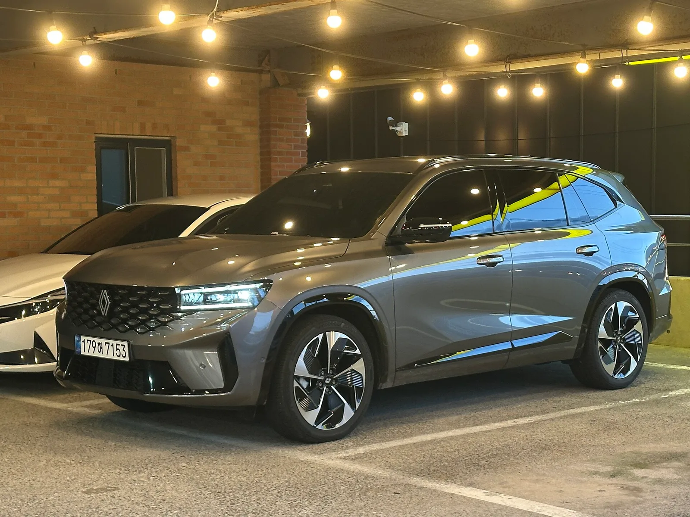

▲ 현대자동차는 9월 브랜드평판지수가 18.86% 떨어졌지만 여전히 1위를 지켰다 ⓒ Wikimedia Commons
순위표만 보면 늘 같은 그림입니다. 현대자동차 1위, 기아자동차 2위, KG모빌리티 3위. 한국기업평판연구소가 매달 내놓는 국산 자동차 브랜드평판 조사에서 이 순서는 좀처럼 바뀌지 않습니다. 그런데 2026년 9월 조사 결과의 속을 들여다보면 얘기가 달라집니다. 1·2위는 지수가 두 자릿수로 빠졌고, 3~5위는 반대로 두 자릿수, 많게는 세 자릿수 퍼센트로 뛰었습니다.
더 이상한 건 그 뒤에 있는 실제 판매 성적입니다. 지수가 가장 많이 오른 KG모빌리티와 르노코리아는 정작 8월 국내 판매량이 전년 대비 40% 안팎씩 줄어든 브랜드입니다. 잘 팔려서 평판이 오른 게 아니라는 뜻입니다. 순위는 그대로인데 숫자는 요동친 9월 브랜드평판 조사를 항목별로 뜯어봤습니다.
1. 9월 순위표: 자리는 그대로, 숫자는 크게 흔들렸다
한국기업평판연구소는 8월 2일부터 9월 2일까지 국산 완성차 5개 브랜드를 대상으로 빅데이터 964만4,415건을 분석했습니다. 지난 8월 조사(1,112만2,450건)보다 13.29% 줄어든 규모입니다. 이 데이터를 참여가치·소통가치·소셜가치·시장가치·재무가치 다섯 항목으로 계량화한 결과가 브랜드평판지수입니다.
| 순위 | 브랜드 | 평판지수 | 전월 대비 |
|---|---|---|---|
| 1위 | 현대자동차 | 4,760,130 | -18.86% |
| 2위 | 기아자동차 | 3,504,938 | -20.48% |
| 3위 | KG모빌리티 | 650,489 | +65.67% |
| 4위 | 르노코리아 | 501,411 | +96.93% |
| 5위 | 한국지엠 | 227,446 | +13.21% |
순위 자체는 8월과 동일합니다. 하지만 1·2위는 전월보다 지수가 20% 안팎 깎였고, 3~5위는 최소 13%에서 최대 97%까지 뛰었습니다. 브랜드평판지수가 절대적인 판매량이나 시장점유율이 아니라 온라인상의 언급량과 화제성을 측정하는 지표라는 점을 감안하면, 9월 한 달 사이 각 브랜드를 둘러싼 온라인 이슈의 총량과 성격이 크게 바뀌었다는 뜻으로 읽힙니다.

▲ 기아는 9월 평판지수가 20.48% 떨어지며 5개 브랜드 중 하락 폭이 가장 컸다 ⓒ Wikimedia Commons
2. 브랜드평판지수, 정확히 무엇을 재는 숫자인가
한국기업평판연구소의 브랜드평판지수는 판매량 통계가 아닙니다. 뉴스, 커뮤니티, 블로그, SNS 등에 남은 빅데이터를 수집해 브랜드에 대한 소비자의 관심도와 소통 활동, 사회적 이슈를 계량화한 지표입니다. 세부적으로는 다음 다섯 항목의 조합으로 산출됩니다.
📍 브랜드평판지수를 구성하는 5개 가치
참여가치(콘텐츠에 대한 소비자 참여도), 소통가치(브랜드와 소비자 간 상호작용), 소셜가치(커뮤니티·SNS 확산도), 시장가치(미디어 노출과 시장 화제성), 재무가치(사회공헌 등 기업활동 관련 지표)로 구성됩니다. 여기에 ESG 관련 지표와 오너리스크 데이터까지 반영해 최종 지수를 산출합니다.
실제 세부지수를 보면 상위 두 브랜드의 구성이 뚜렷하게 드러납니다. 현대자동차는 참여지수 124만8,080, 미디어지수 71만9,545, 소통지수 100만5,321, 커뮤니티지수 146만6,694, 사회공헌지수 32만490을 각각 기록했습니다. 기아자동차는 참여지수 70만9,128, 미디어지수 49만8,364, 소통지수 96만4,258, 커뮤니티지수 117만9,682, 사회공헌지수 15만3,506이었습니다. 두 브랜드 모두 커뮤니티지수가 가장 큰 비중을 차지한다는 공통점이 있습니다. 온라인 커뮤니티에서의 언급량과 화제성이 전체 지수를 떠받치는 구조라는 뜻입니다.
3. 왜 1·2위마저 두 자릿수로 빠졌나
1·2위가 동반 하락한 배경에는 대규모 리콜이 있습니다. 국토교통부는 8월 초 현대차·기아·스텔란티스코리아·혼다코리아 4개사, 13개 차종, 51만2,393대에 대한 자발적 시정조치를 발표했습니다. 이 가운데 현대차·기아 물량이 대부분을 차지합니다.
투싼 등 2개 차종 10만4,781대는 전방충돌방지 보조시스템 소프트웨어 오작동 가능성으로, G80 등 5개 차종 12만7,059대는 엔진 내부 부품 체결 불량에 따른 연료 누유·화재 우려로 리콜에 들어갔습니다. 아반떼 등 2개 차종 16만8,181대는 하이브리드 통합 제어기 과열로 인한 화재 가능성이 지적됐고, 기아 K8 등 2개 차종 10만9,237대 역시 연료 누유 우려로 8월 12일부터 시정조치가 진행됐습니다. 화재·안전 관련 키워드는 온라인에서 확산 속도가 빠른 만큼, 커뮤니티지수와 소통지수를 동시에 끌어올리되 방향은 부정적으로 작용했을 가능성이 큽니다.

▲ KG모빌리티는 9월 평판지수가 65.67% 뛰며 5개 브랜드 중 가장 큰 상승 폭을 기록했다 ⓒ Wikimedia Commons
4. 실제로는 덜 팔렸는데… KG모빌리티·르노코리아 반등의 역설
3위 KG모빌리티와 4위 르노코리아의 평판지수 상승 폭은 각각 65.67%, 96.93%로 압도적입니다. 그런데 같은 기간 두 회사의 실제 판매 성적표는 정반대 방향을 가리킵니다.
KG모빌리티는 8월 국내외 합산 6,860대를 판매해 전년 동월보다 22.6% 줄었습니다. 특히 내수 판매는 2,300대로 전년 대비 43.3% 감소했습니다. 모델별로는 토레스 460대, 액티언 444대, 무쏘 EV 130대, 토레스 EVX 87대에 그쳤습니다. 다만 같은 달 서울 코엑스에서 열린 'EV 트렌드 코리아 2026'에 참가해 무쏘 EV·토레스 EVX·액티언 하이브리드를 전시하며 미디어 노출을 늘렸습니다.
르노코리아는 8월 4,261대를 판매해 전년비 34% 줄었고, 이로써 4월부터 5개월 연속 판매 감소를 기록했습니다. 실적을 이끌던 그랑 콜레오스의 신차 효과가 둔화한 영향이 컸습니다. 그럼에도 르노코리아는 이달 그랑 콜레오스의 2027년형 연식변경 모델과 화이트 에디션 '에뚜알'을 새로 선보였고, 생산 시점별로 최대 300만원의 유류비·옵션 지원 프로모션을 발표했습니다. 신차·프로모션 소식이 온라인에서 화제가 되면서 판매량과 무관하게 화제성 지표가 크게 오른 것으로 풀이됩니다.

▲ 르노코리아는 8월 판매가 34% 줄었지만 신차·프로모션 소식으로 평판지수는 96.93% 뛰었다 ⓒ Wikimedia Commons
5. 한국지엠까지, 하위권 전원 상승이 말해주는 것
5위 한국지엠도 예외는 아니었습니다. 평판지수가 전월 대비 13.21% 오른 가운데, 실제 내수 판매는 8월 전년 대비 약 39.4% 줄어든 것으로 집계됐습니다. 결국 3~5위 브랜드 세 곳 모두 판매는 줄고 평판지수는 오르는 같은 패턴을 보인 셈입니다.

▲ 한국지엠(쉐보레)도 8월 판매는 줄었지만 9월 평판지수는 13.21% 오르며 5위에 자리했다 ⓒ Wikimedia Commons
이 대목에서 브랜드평판지수의 한계와 성격이 동시에 드러납니다. 지수는 '얼마나 많이 팔렸는가'가 아니라 '얼마나 많이, 어떤 맥락으로 언급됐는가'를 측정합니다. 절대 규모가 작은 하위권 브랜드는 신차 발표나 이벤트 참가 같은 단발성 이슈 하나만으로도 전월 대비 변동률이 크게 튈 수 있습니다. 반대로 현대차·기아처럼 이미 언급량 총합이 큰 브랜드는 리콜 같은 부정적 이슈가 겹치면 절대 지수는 여전히 압도적으로 앞서도 변동률상으로는 큰 폭의 하락으로 나타납니다.
6. 순위와 판매는 다른 이야기다
정리하면 9월 브랜드평판 조사가 보여준 건 두 가지입니다. 첫째, 절대적인 순위(1~5위)는 시장점유율 구도와 크게 다르지 않게 유지됐습니다. 둘째, 그 안의 변동 폭은 판매 실적과 사실상 반대로 움직였습니다. 잘 팔린 브랜드가 아니라 이슈가 많았던 브랜드의 지수가 크게 흔들린 셈입니다.
브랜드평판지수를 소비자 신뢰나 실제 구매 의향과 곧바로 동일시하기 어려운 이유가 여기에 있습니다. 리콜 같은 부정 이슈도, 신차·프로모션 같은 긍정 이슈도 결국 '언급량'이라는 같은 잣대로 집계되기 때문입니다. 다음 달 조사에서 이번 리콜 여진이 얼마나 이어질지, 그리고 KG모빌리티·르노코리아의 상승세가 실제 판매 회복으로 이어질지가 관전 포인트입니다.
조사 결과 원문은 일간투데이에서 확인 가능하다. 일간투데이 원문 기사 보기